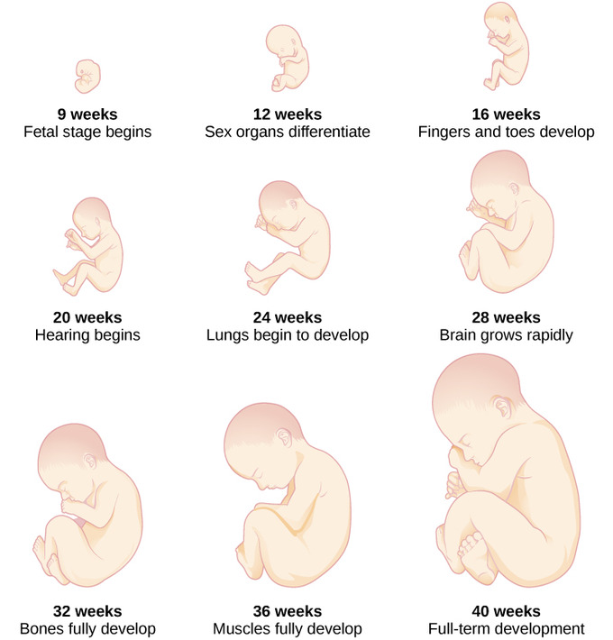

Prenatal Development
Teratogens
A teratogen is a substance such as drugs or alcohol that can disturb the development of an embryo or fetus that may result in birth defects or halt the pregnancy. As my mother did not smoke or drink alcohol during pregnancy, no toxins were put into her body while I was in her womb and I was born as a healthy infant.
Germinal Stage
The Germincal Stage is when the sperm and the cell become one in the fallopian tubes. This combination creates a fertilized egg, and moves towards the uterus. Within 24 hours, the single cell zygote begins to divide and forms a blastocyst. The blastocyst contains all the main parts for the fetus, the ectoderm (skin and nervous system), the endoderm (digestive and respiratory system), and the mesoderm (muscle and skeletal system).
Embryonic Stage
After 3 weeks of cells dividing, the mass of cells is now known as an embryo. The embryo now becomes distinct as a human, and divides into the three important body systems. A week later, the head begins to form, including the eyes, nose, ears and mouth. In the 8th week of pregnancy, the embryo will show all the basic organs and limbs of a baby, including knees and elbows, despite being only one inch in length.
Fetal Stage
Past the first 2 months of pregnancy, the embryo becomes a fetus. During this stage, all the embryonic body systems continue to grow and develop, and sex organs develop. By the end of the first trimester of pregnancy, all of the fetus's organs have formed. Throughout the rest of the pregnancy, the heartbeat of the fetus grows stronger and fingernails, hair, eyelashes, and toenails form. Around 7 months of pregnancy, the fetus's brain and nervous system become responsive and starts to mature, becoming much like a sleeping infant's brain. The fetus then begins to rapidly gain weight to prepare for life outside of the womb, increasing in size by six times.